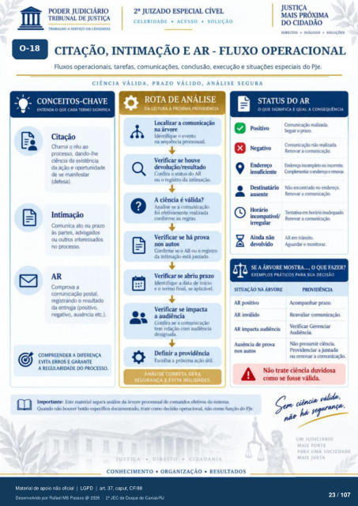

Transcrição automática em português, ainda não revisada. Confira grafia, prazos e termos jurídicos na imagem e no PDF antes de utilizar.
CELERIDADE • ACESSO • SOLUCÀO
TRABALHO A SERVIÇO DA
na árvore
DIREITOS • DIÁLOGO •
CITAÇÃO, INTIMAÇÃO E AR - FLUXO OPERACIONAL
Fluxos operacionais. tarefas, comunicações. conclusão, execução e situações especiais do PJe.
CIÊNCIA VÁLIDA, PRAZO VÁLIDO, ANÁLISE SEGURA
- CONCEITOS-CHAVE
ENTENDA O QUE CADA TERMO SIGNIFICA
Citação Chama o réu ao
prcx:esso. dando-lhe ciência da existência
da e de se manifestar
(defesa). Intimação
Comunica ato ou prazo às partes, advc8ados
ou outros interessados no processo.
Comprova a comunicação
registrando o resultado da entrega
negativo, ausência etc.).
COMPREENDER A DIFERENÇA
EVITA ERROS E GARANTE
A REGULARIDADE DO
ROTA DE ANÁLISE
DA LEITURA À PRÓXIMA PROVIDENCIA
lxxalizar a comunicação Identifique o e.'ento
na sequência pr«vs.sual. Verificar houve
devolução/ resultado Confira o Status do AR
ou o registro da intimação. A ciência é válida?
Analise se a cununicaçáo foi efetivamente realizada
conforrne as regras. Verificar se há prova
nos autos Confirrne se o AR ou o registro
da intimaçào está juntado. Verificar se abriu prazo
Identifique a data de início e o termo final. se aplicável.
Verificar se impacta a audiência
Confira se a cununicaçào tem relaçào com audiência
designada. Definir a providência
Escolha a próxima útil.
ANÁLISE CORRETA GERA
SEGURANÇA E EVITA NULIDADES.
STATUS DO AR
O QUE SIGNIFICA E QUAL A CONSEQUÊNCIA
9 Negativo
insuficiente Ikstinatário
Horário Ainda não
devolvido reahzú
o vazo Rencwu a comurucaçb
o e rema. Não erxlereçcx
Renovar a Tentaiva «n Mráró
Rermar a AR transita
Aguardar e mnitorar.
SE A ÁRVORE MOSTRA.... O QUE FAZER?
EXEMPLOS PRÁTICOS PARA SUA DECISÃO
SITUAÇÃO NA ÁRVORE
AR psitivo AR inválido
AR impacta audiência de prova
nos Acompanhar prazo.
Reavaliar comunicação. Verificar (krenciar
Audiência. Não presumir ciência.
Provi-{knciar a juntada ou renovar a comunkaçü).
Imprtante: Ege material separa análise da árvore pr«essual de comarxios efetiv«.s sistema. houver trate decisão nao do PJe.
• CIO ADA N IA
CONHECIMENTO • ORGANIZACÁO • RESULTADOS
Não trate ciência duvidosa corno fosse válida.
MAIS FOR IE
PARA UMA SOCIEDADE
MAIS JUSTA
Ver também o infográfico original (página 23)
